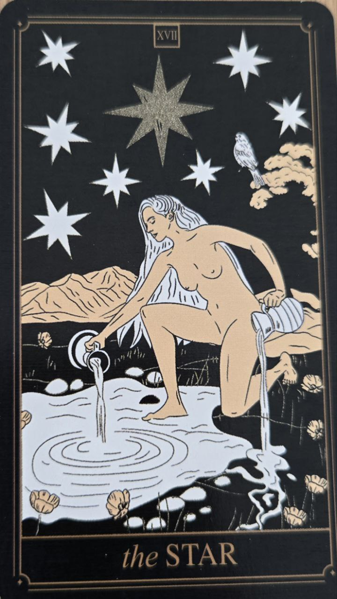

Hviezda je kartou nádeje, obnovy a inšpirácie. Objavuje sa po Veži ako symbol pokoja, ktorý prichádza po náročnom období.
Predstavuje dôveru v budúcnosť a schopnosť pokračovať ďalej.
Karta symbolizuje optimizmus, uzdravenie a nové možnosti. Povzbudzuje človeka, aby si zachoval vieru v seba a svoje ciele.
Naznačuje obdobie pokoja a postupného zotavovania.
Na karte býva postava nalievajúca vodu na zem aj do jazera. Tento obraz symbolizuje rovnováhu medzi vnútorným a vonkajším svetom.
Jasná hviezda na oblohe predstavuje nádej a smerovanie.
Hviezda patrí medzi najpozitívnejšie tarotové karty a často sa spája s pocitom úľavy po náročných skúsenostiach.